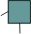

| Artefacto: Diseño de prueba |
|  |
|
Objetivo
Relaciones
| Artefacto del contenedor | ||
|---|---|---|
| Roles | Responsable: | Modificado por: |
| Tareas | Entrada a: | Salida de: |
| Uso del proceso | ||
Descripción
Personalización
| Opciones de representación | Representación UML: Paquete.
El nivel de formalismo podría reducirse para acomodar proyectos más pequeños o con un nivel bajo de ceremonia. A menudo se considera que este producto de trabajo está incluido en el modelo de diseño |
|---|
Más información
| Directrices |
|---|
© Copyright IBM Corp. 1987, 2006. Reservados todos los derechos. |